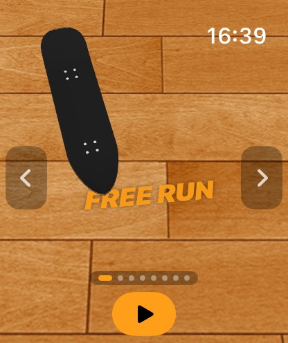
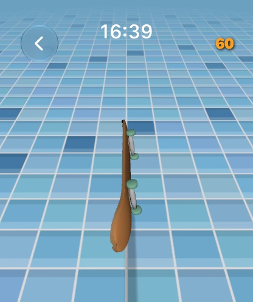
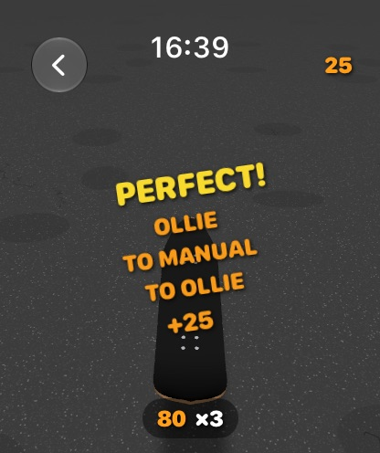
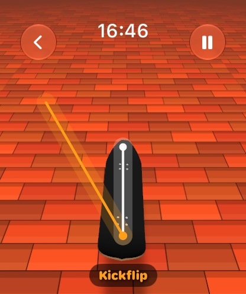
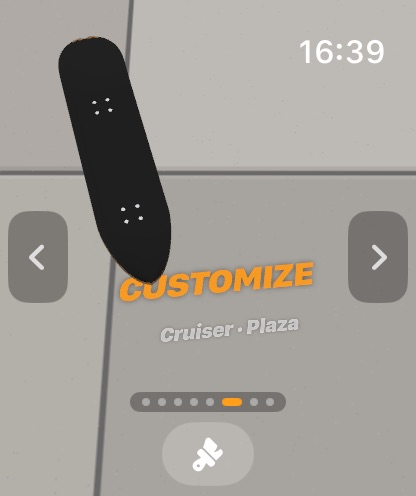
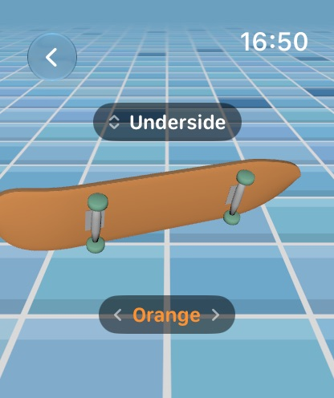

Skaty Watch
Skate on your wrist. Pull down to crouch, flick to pop and spin the board, tap to catch it, and land flat for a Perfect.

- LAUNCHED
- 2026-09-09
- PLATFORM
- Apple Watch
- LANGUAGES
- 23
- PRICE
- Free
Can flip tricks work on a screen this small?
A board, your finger and a tiny park on your wrist. The timing is in the catch: flick harder for faster spins, catch late for doubles and triples. Miss the catch and you bail. Deeper crouches and faster flicks mean bigger air.
-
01
Real tricks
Ollies, nollies, manuals, shove-its, kickflips, heelflips, varials, hardflips and 360 flips, in regular or goofy stance.
-
02
Four modes
A Tutorial that draws every gesture on screen to trace, then Free Run, 60-second Timed and one-life Arcade.
-
03
Earn your setup
Chain tricks and manuals into combos up to ×10, and clear 10 goals to unlock decks, paints and grounds.
From the App Store






Six grounds, from pier wood to empty pool
The latest update puts the camera right behind the board, steered by holding and sliding your thumb. Skaty Watch is free, has no ads, and nothing leaves your wrist.